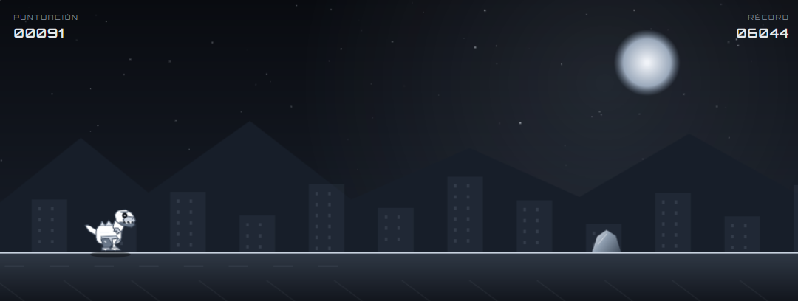

PYTHON / GAME DEV

PROJECT 01
PROYECTO ANTERIOR
Dino Runner
Videojuego inspirado en el dinosaurio de Google, desarrollado en Python durante segundo de Bachillerato. Una primera experiencia creando una mecánica de juego mediante código.
Proyecto académico anterior. La demo y el repositorio se añadirán cuando estén disponibles.